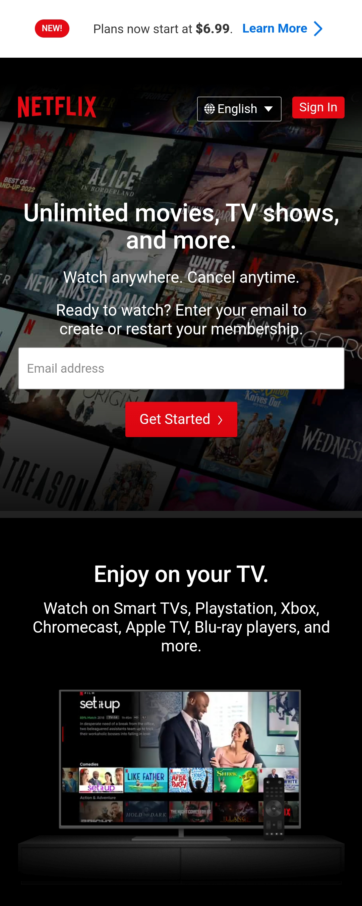
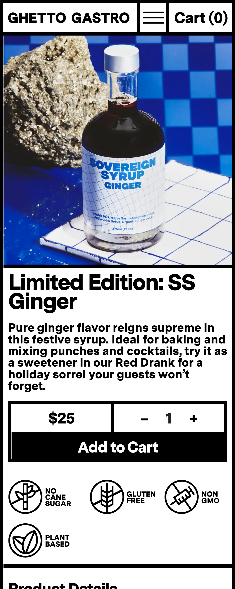

Proximity
Netflix
Netflix’s website is a good example of using proximity well. In the top right corner, you will see the button for choosing your preferred language right next to the "sign in" button. The user can quickly find the language they need and sign in. The two are related to each other, thus they are placed in close proximity.
The same is true for the email address input bar and the "sign up" button. If you want to set up an account just type in an email and push the button which, conveniently, is right next to it.
Fitt's Law
Python
When viewing Python's website in larger devices. Their site is displayed in a more typical fashion. With navigation buttons in a row at the top and the main page below. But when the window is shrunk down to phone size the website changes to display all the navigation buttons in a column in the center of the screen. While also keeping each button relatively big. This is exactly how Fitt's Law should be incorporated. By keeping the buttons big and the distance short from the edge of the screen (Perfect for a thumb push), making the site easy to navigate.
Contrast
Ghetto Gastro
Sometimes the simplest color schemes are best. Easy to read and effective. This is the case with Ghetto Gastro's website. They use contrast very effectively. Sometimes nothing beats black and white if done well. The bold fonts and bold lines contrast nicely with the white background making the site look edgy and exciting. The effect helps set a feeling for the brand and attract the target clientele.